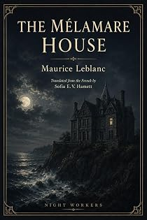

La Demeure mystérieuse
A novel of Arsène Lupin
by Maurice Leblanc · translated by Sofia E. V. Hamettpar Maurice Leblanc · traduit par Sofia E. V. Hamett
The bookLe livre
A charitable evening at the Opéra: between two ballets, twenty beautiful women — actresses and society ladies — parade gowns from the great houses, the audience votes for the three loveliest, and the takings go to the workrooms that made them. Generous Paris loves attaching its pleasures to a good cause. Something is stolen, and the trail leads to a shuttered mansion nobody has entered in years.
Une soirée de bienfaisance à l'Opéra : entre deux ballets, vingt jolies femmes — actrices et femmes du monde — présentent des robes des grandes maisons, la salle vote pour les trois plus belles, et la recette va aux ateliers qui les ont faites. Le Paris généreux adore accrocher ses plaisirs à une bonne cause. Un vol a lieu, et la piste mène à un hôtel clos où personne n'est entré depuis des années.
From the opening pagesLes premières pages
It was a charming idea, and it was taken up at once by that generous Paris which is always happy to attach its pleasures to a good cause. Between two ballets, on the stage of the Opéra, twenty beautiful women — actresses and society ladies alike — would appear in gowns from the greatest fashion houses. The audience would vote for the three loveliest dresses, and the takings from the evening would be shared out among the three workrooms that had made them. The result: a fortnight on the Riviera for a certain number of the girls who sewed them.
The thing caught fire immediately. Within forty-eight hours the house was sold out down to the last cheap seat. On the night of the performance the crowd pressed in, elegant and humming, its curiosity climbing by the minute.
As it happened, that curiosity had gathered itself onto a single point, and every word exchanged in the building came back to the same inexhaustible subject. It was known that the admirable Régine Aubry — a vague sort of singer from a small theatre, but a very great beauty — was to appear in a Valmenet gown, covered by a marvellous tunic worked with diamonds of the purest water.
And behind that lay a second question, more thrilling still. For months the admirable Régine Aubry had been pursued by the immensely rich gem dealer Van Houben. Had she given in at last to the passion of the man they called the Emperor of Diamonds? Everything suggested she had. In an interview the day before, the admirable Régine had answered:
"Tomorrow I shall be dressed in diamonds. Four workmen, hand-picked by Van Houben, are in my bedroom at this moment fastening them onto a silver bodice and tunic. Valmenet is there, directing the work."
Now, in her box on the grand tier, Régine sat enthroned, waiting her turn to be shown off, while the crowd filed past her as past an idol. She really did have a right to that word admirable which people always stuck in front of her name. By some singular trick of nature, her face combined everything noble and chaste in the beauty of the ancients with everything we admire today: grace, allure, expression. An ermine cloak wrapped her famous shoulders and hid the miraculous tunic. She smiled, happy and likeable. Everyone knew that three detectives were on watch outside the doors to the corridor, solid and solemn as London policemen.
Two men were standing inside the box. First the fat Van Houben, the gallant gem dealer, whose hair and the artificial red on his cheekbones between them made him a picturesque faun's head. Nobody knew exactly where his money had come from. He had once sold imitation pearls; then he had come back from a long journey transformed into a great lord of the diamond trade, and it was impossible to say how the change had been worked.
Régine's other companion stayed back in the half-light. You could tell he was young, and that his outline was slender and powerful at the same time. This was the famous Jean d'Enneris, who three months earlier had stepped ashore from the motor launch in which he had sailed round the world alone. Van Houben had met him only recently and had introduced him to Régine the week before.
The first ballet unfolded to general inattention. During the interval Régine, ready to go, stood talking at the back of her box. She was rather caustic with Van Houben, close to rude; with d'Enneris she was charming, in the manner of a woman who wants to please.
The little performance seemed to irritate Van Houben.
"Steady on, Régine," he said. "You'll turn our sailor's head. Bear in mind that after a year on the water a man catches fire very easily."
Van Houben always laughed very loudly at his own coarsest jokes.
"My dear man," Régine observed, "if you weren't the first to laugh, I should never notice that you had tried to be witty."
Van Houben sighed and put on a funereal expression.
"D'Enneris, a word of advice. Don't lose your head over this woman. I lost mine, and I've been as miserable as a heap of stones ever since — precious stones," he added, with a heavy pirouette.
On stage, the parade of dresses had begun. Each contestant stayed about two minutes, walking, sitting, turning the way models do in the showroom of a fashion house.
Her turn was coming. Régine stood up.
"I've got a touch of stage fright," she said. "If I don't carry off first prize I shall blow my brains out. Mr d'Enneris, who are you voting for?"
"For the most beautiful woman," he said, with a bow.
"We're talking about the dress."
"The dress doesn't interest me. What matters is a beautiful face and the charm of the body."
"Then go and admire the beauty and the charm of the young person they're applauding at this moment," said Régine. "She's a model at the house of Chernitz — the papers have written about her. She designed the whole outfit herself and handed it over to the other girls to make up. She's delicious, that child."
And the girl was indeed slight and supple, harmonious in every gesture and attitude; she gave the impression of grace itself. On her swaying body the dress, very simple and yet of an infinitely pure line, revealed a perfect eye and an original imagination.
"Arlette Mazolle, is that right?" said Jean d'Enneris, checking the programme.
"Yes," said Régine.
And she added, without bitterness or envy:
"If I were on the jury I shouldn't hesitate to put Arlette Mazolle at the top of the list."
Van Houben was outraged.
"And what about your tunic, Régine? What is that model's get-up worth beside your tunic?"
"Price has nothing to do with it."
"Price counts above everything else, Régine.
"And that is exactly why I beg you to be careful."
"Careful of what?"
"Of pickpockets. Bear in mind that your tunic isn't woven out of peach stones."
He roared with laughter. But Jean d'Enneris agreed with him.
"Van Houben is right. We ought to come with you."
"Absolutely not," Régine protested. "I want you to tell me the effect I make from up here, and whether I look too much of a fool on the stage of the Opéra."
"Besides," said Van Houben, "Chief Inspector Béchoux of the Sûreté is answerable for everything."
"So you know Béchoux?" said d'Enneris, with an interested air. "Béchoux, the policeman who made his name working with the mysterious Jim Barnett, of the Barnett & Co. agency?"
"Ah, don't so much as mention that damned Barnett to him. It makes him ill. Apparently Barnett led him a dance he's never got over."
"Yes, I've heard something about it. The business of the man with the gold teeth? And Béchoux's twelve African shares? So Béchoux is the one who organised the defence of your diamonds?"
"Yes — he was going away for ten days or so. But he hired me three retired policemen at a fortune apiece, big lads, the ones keeping watch at the door."
D'Enneris remarked:
"You could hire a regiment and it still wouldn't be enough against certain kinds of trick."
The excerpt ends here — about 1,215 words of the published edition.L'extrait s'arrête ici — environ 1,215 mots de l’édition parue.
KindlePaperbackBrochéContextContexte
Everyone in English knows The Hollow Needle and 813. Almost nobody has read Barnett & Co., The Mélamare House, La Barre-y-va or The Girl with the Green Eyes — the later Lupin books that never entered the English canon, or entered it once and fell out. There is a symmetry the house enjoys here: Leblanc built Lupin out of newspaper reports on Alexandre Marius Jacob, whose memoirs gave Night Workers its name.
Tout le monde connaît en anglais L'Aiguille creuse et 813. Presque personne n'a lu L'Agence Barnett et Cie, La Demeure mystérieuse, La Barre-y-va ou La Demoiselle aux yeux verts — les Lupin tardifs qui ne sont jamais entrés dans le canon anglais, ou qui en sont sortis. Il y a là une symétrie qui plaît à la maison : Leblanc a bâti Lupin à partir des comptes rendus de presse sur Alexandre Marius Jacob, dont les mémoires ont donné son nom à Night Workers.
The whole programmeTout le programme